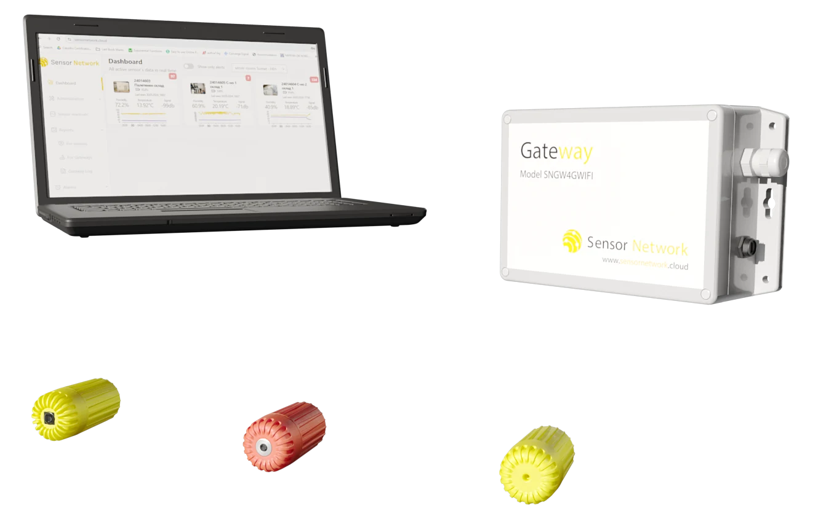

Sitech Consulting Ltd.
Sensors, platform and analysis from one hand.
Sitech Consulting is a sensor technology company in Sofia, Bulgaria. We design the hardware, run the cloud platform and write the analysis reports ourselves, so the people who built the sensor are the people who read your data.

- What we make
- Sensor Network: Ø24 mm wireless temperature, humidity and infrared sensors, outdoor 4G, Wi-Fi and solar gateways and the sensornetwork.cloud platform with alarms. CureShift: concrete maturity and moisture monitoring on the same sensor platform. Monitoring and analysis reports with position-level findings from the live data.
- Who we work with
- Timber producers and timber-construction firms; contractors, precast plants and infrastructure owners; pharma, food and cold-chain storage; IT and telecom sites; museums, agriculture, industrial maintenance and research institutes.
- Where
- Headquarters and development in Sofia, Bulgaria. Installations in Bulgaria and Austria. Materials in English, German, Bulgarian and Turkish. Delivery EX Works Sofia within ten working days; remote commissioning anywhere.
- How we work
- Electronics design and production in-house, with more than 25 years of experience in bringing prototypes to series. Every product is tested in the material it is made for before it is sold: 35 days under concrete in the laboratory, a year in embedded test elements, then a live construction site and a 62-sensor timber tower.
Support
E-mail and phone support Monday to Friday 9–18 CET. Critical problems are answered within four hours. Software updates are part of the subscription. All Sensor Network products carry a 24-month warranty on manufacturing defects.
- Support e-mail
- info@sitech.consulting
- Phone
- +359 888 920 108
- Platform
- sensornetwork.cloud
Company
- Legal name
- Sitech Consulting Ltd. (Ситех Консултинг ЕООД)
- Managing director
- Ventseslav Kolev, CEO
- Address
- 66B Manastirski Livadi Street, 1404 Sofia, Bulgaria
- VAT number
- BG200604351
- Websites
- sitech.consulting, sensornetwork.cloud
Start with your own data in ten days.
The Demo Set (one gateway, three sensors, three months of software) is delivered within ten working days and commissioned remotely. Send a sketch or floor plan and the coverage plan comes back within three working days.
- Phone
- +359 888 920 108
- info@sitech.consulting
- Office
- 66B Manastirski Livadi Street, 1404 Sofia, Bulgaria